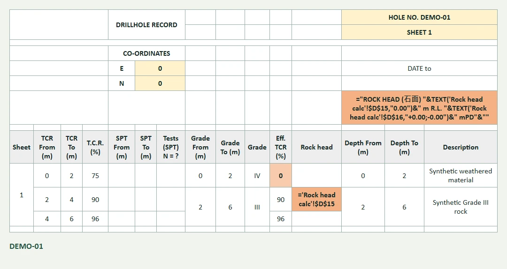

← 全部作品／ 文件資料


交付成果5 小時 → 15 分鐘
§ 做法
我怎樣做
一份岩面 PDF 由約 5 小時縮至約 15 分鐘。
- 以往
- 工程師判讀一份岩面 PDF 約 2 小時，把資料打入 Excel 約 3 小時，共約 5 小時。
- 現在
- 約 15 分鐘，由 AI Skill 交出排好格式的 Excel 並計算岩面標高。
- 難點
- 最花時間的是描述條件：描述文字優先於數字，寫明 weak 的岩層即使 TCR 為 100% 也不可用。
- 使用
- 工程師已用於 20 份文件。
- 說明
- 「Skill」是寫給 AI 代理的操作說明（SKILL.md），配合 Python 腳本。
- 測試
- 鑽孔岩面計算另有 64 格標準答案的回歸測試。
先讀版面
按欄線、合併格和分頁邊界，辨認屬於同一筆的資料。
描述文字優先
描述寫明某層是 weak，即使 TCR 是 100%，該段岩石仍當作不可用。Skill 把這類描述條件逐條寫成規則，再計算岩面標高。
交給工程師
程式將資料寫成排好格式的 Excel，疑點保留，讓同事回到原頁判斷。
- AI Skills
- Python
- OCR
- XlsxWriter
§ 試用
親手試用
這份 PDF 要先看哪裏？示例
 先分清欄位，才讀內容
先分清欄位，才讀內容先認版面
Skill 先引導 AI 定位欄線、合併格與分頁邊界，建立資料之間的關係。
上方重現 Skill 的判讀次序。Excel 由原程式使用示例資料輸出。